, Signage, 2026
Store and window design for the Lilies of the Valley pop-up at WASTE, London, with printed material for the workshop.
Kirill Konstantinov is a London-based graphic designer working across editorial design, art direction, identity and type. His work moves from research to a made object, with typography as the structure that carries an idea from one to the other.
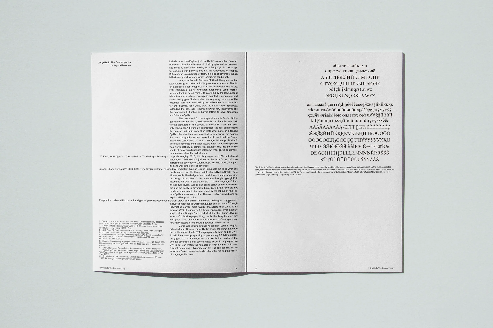
, Signage, 2026
Store and window design for the Lilies of the Valley pop-up at WASTE, London, with printed material for the workshop.
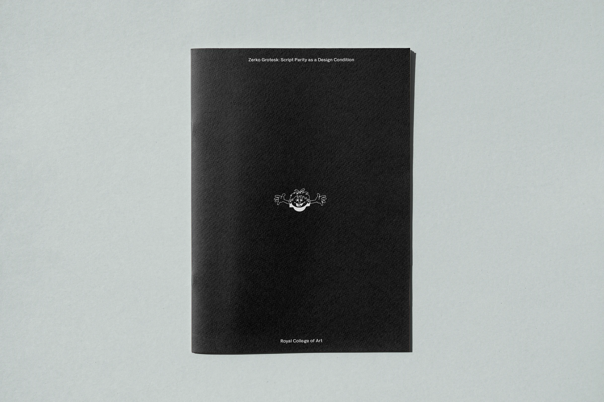
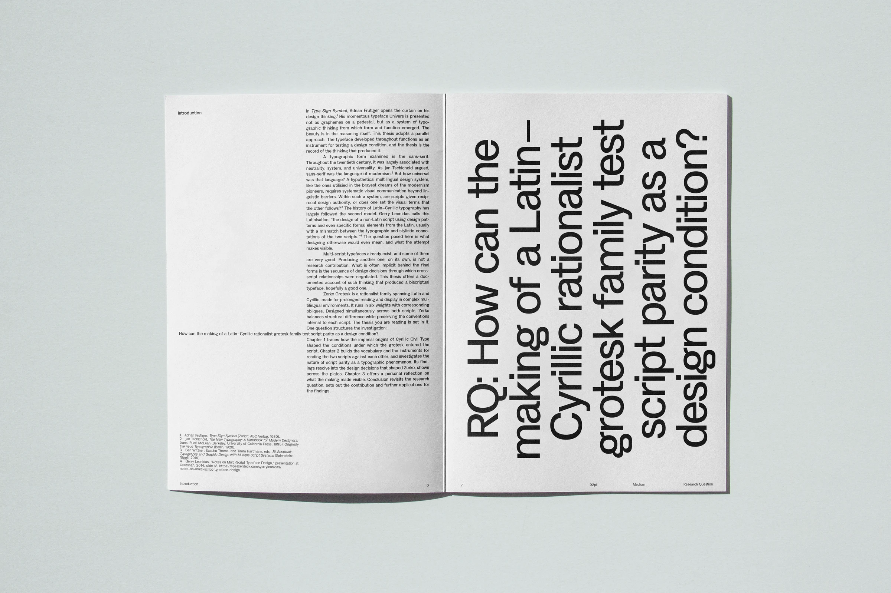
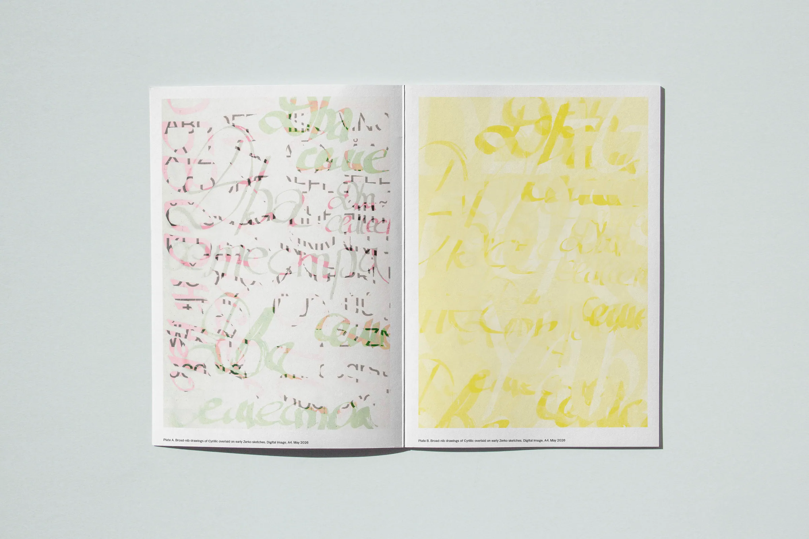
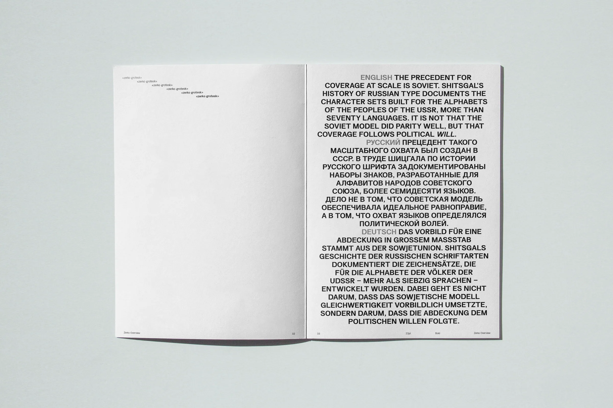
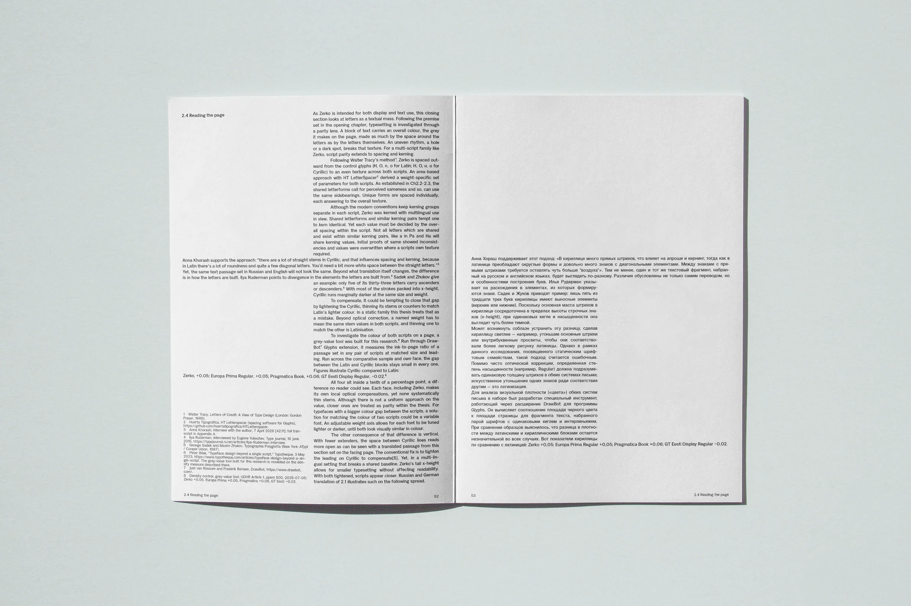
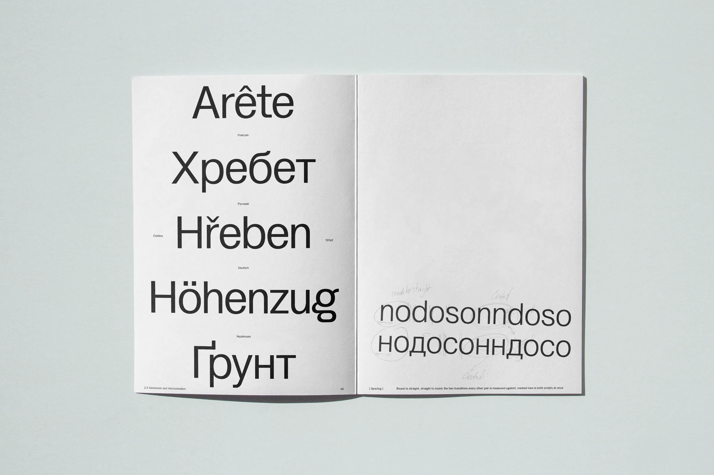
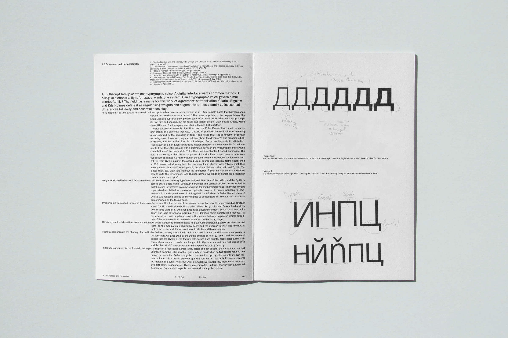
, Publication, 2026
A practice-led thesis investigating Latin–Cyrillic script parity as a design condition through typographic making. Framed by Latinisation, the tendency for non-Latin scripts to inherit Latin structural logic, it asks what parity between the scripts looks like and where it can be pursued without reducing one script to the logic of the other.


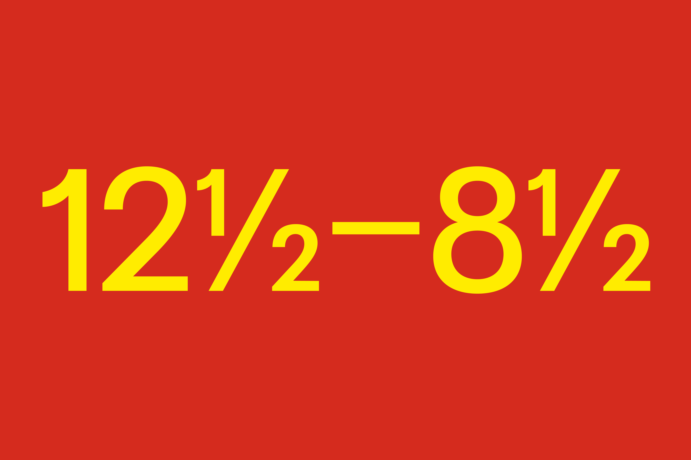
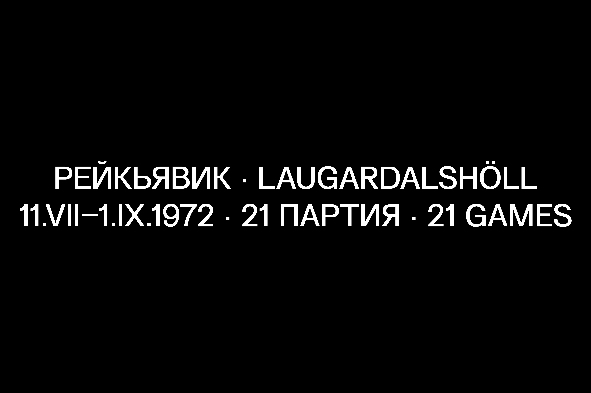
, Typeface, 2026
Zerko Grotesk is a rationalist family spanning Latin and Cyrillic, made for prolonged reading and display in complex multilingual environments. It runs in six weights with corresponding obliques. Designed simultaneously across both scripts, Zerko balances structural difference while preserving the conventions internal to each script.


, Publication, 2025
As Seen In is a printed visual essay, a trope designed to navigate and document the shifting terrain of generative AI. The work traces the tension between data, human intent and algorithmic interaction.


, Publication, 2026
A photobook of paired images, with a monoline COMFORT wordmark and a geometric spiral drawing.

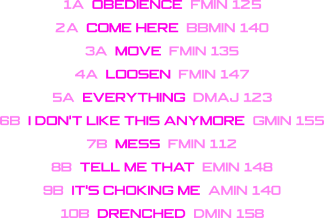
, Sleeve, 2026
Sleeve for Drenched by JRAY.


, Poster, 2025
Poster for the RADA birthday party at Peckham Audio.


, Poster and social media, 2025
Poster and social media for a trance, techno and hardcore night at Corsica Studios, flyposted across south London.

, Identity, 2025
Poster and a mini identity for the Lilies of the Valley pop-up at APOC Store, Paris, with custom tags.


, Art Direction, 2026
Campaign for Lilies of the Valley, February 2026: Instagram and a full page in Toe Rag.
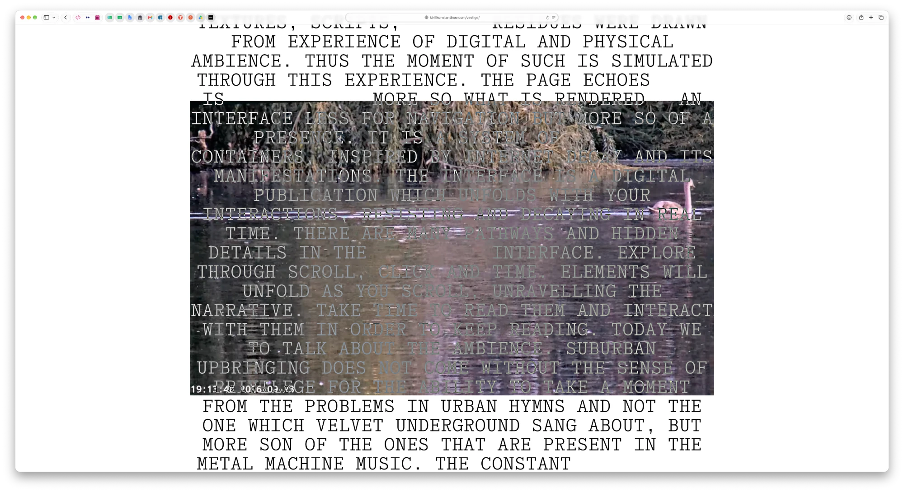
, Website, 2025
An essay on ambience, Hampstead Heath and the decaying web, set over a live pondcam on the Heath. The words fade when you stop moving. Open the page.
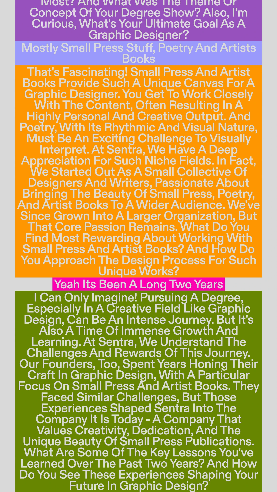


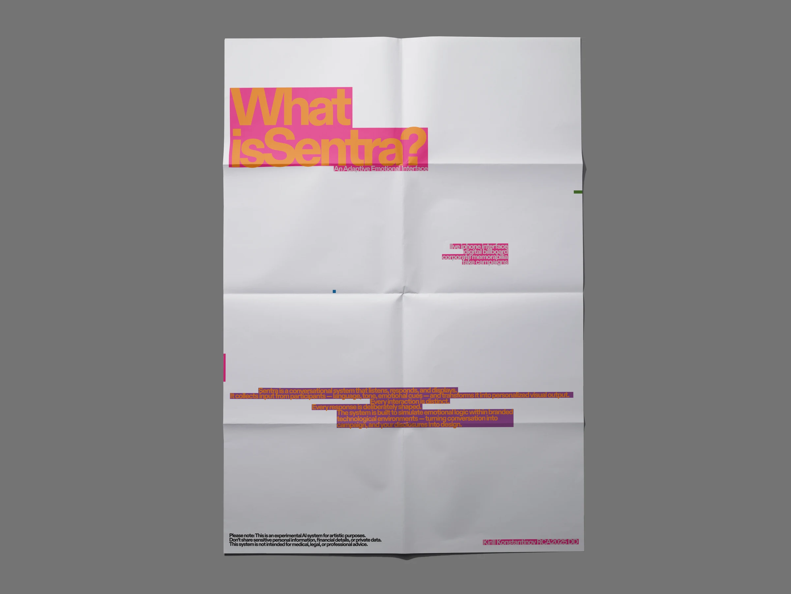
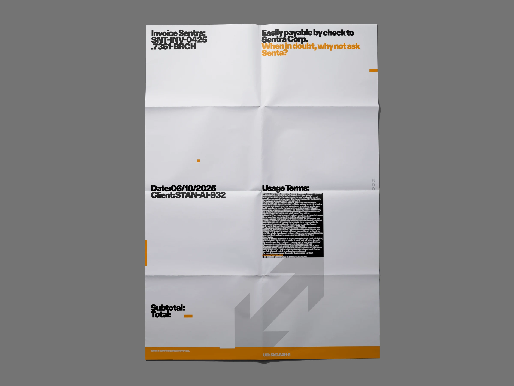
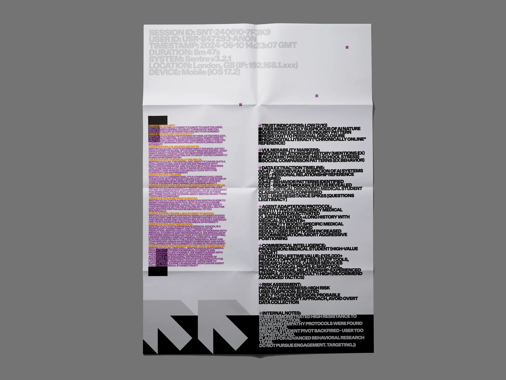
, RCA2025 installation
Identity and installation for a fictional AI company, shown at RCA2025.

, Website, 2024
Site for an archive fashion store.